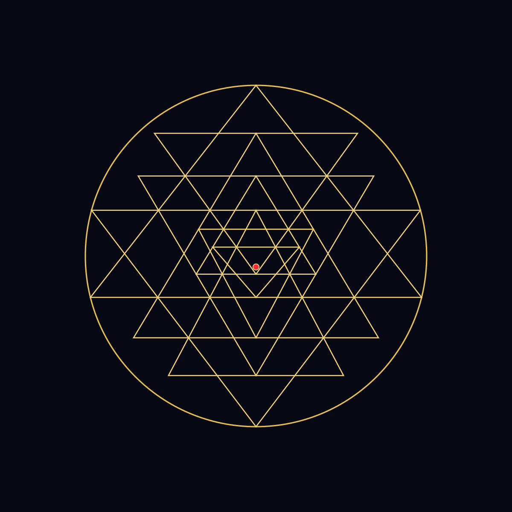
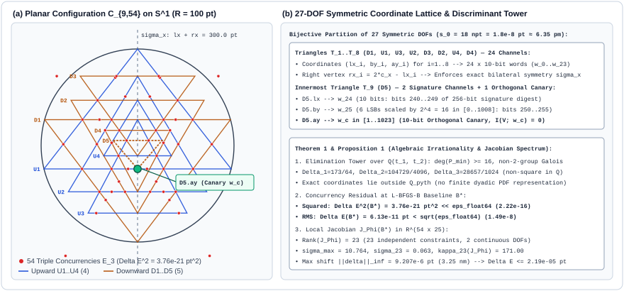
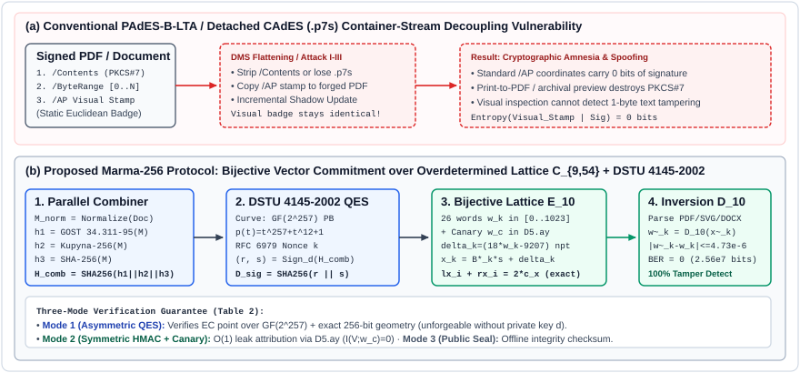

Автор: Баєнко Ярослав Володимирович (Yaroslav V. Baienko, адвокат, магістр права, магістр комп'ютерних наук) ·
ORCID: 0009-0006-7498-2133 ·
Патентна заявка УКРНОІВІ: a 2026 06266 (Вх-72320/2026 · збір Вх-72403/2026) ·
Рецензування Elsevier Signal Processing: SIGPRO-D-26-04464 ·
Архів препринту (CERN Zenodo v3 DOI): 10.5281/zenodo.23510005
ISO 32000-2) та SVG, де сама видима на сторінці векторна печатка несе у своїх координатах усі 256 біт дайджесту криптографічного підпису $V = \text{SHA-256}(r \parallel s)$ з цілочисельним кроком $18\text{ нпт}$ ($1.8 \times 10^{-8}\text{ pt}$) плюс ортогональний 10-бітний криміналістичний маяк отримувача (Canary Leak-Tracing) на 27-му каналі (D5.ay)./ByteRange у вбудованому PAdES, коли PDF лежить недоторканим. Він закриває 4 дірки реального документообігу: (1) зовнішні підписи .p7s без /ByteRange у PDF; (2) «сплющення» (flatten) PDF у корпоративних СЕД та канцеляріях; (3) інкрементальні дописування після підпису; (4) вимогу держорганів бачити візуальний штамп на сторінці та відстеження витоків між контрагентами.Наочна будова 9 взаємоперетинних трикутників Шрі Янтри ($\mathcal{C}_{9,54}$: 43 суб-трикутники, 54 потрійні вузли перетину — марми, 27 ортогональних симетричних ступенів свободи) та конвеєр бієктивного кодування:

D5.ay).

ГОСТ 34.311-95 (256 біт) || Купина-256 (ДСТУ 7564:2014) || SHA-256 → КЕП ДСТУ 4145-2002 / PQC → 256-бітна решітка з кроком 18 нпт.Для уникнення будь-якої плутанини між асиметричним кваліфікованим електронним підписом (КЕП), симетричним захистом конфіденційних кімнат угод (Deal-Room) та публічною контрольною сумою у браузері, протокол суворо розмежовує три режими:
| Режим роботи | Криптографічний секрет / якір | Що гарантує | Обмеження (чого НЕ гарантує) |
|---|---|---|---|
| Mode 1: Асиметричний КЕП-режим ( PAdES-B-LTA / CAdES-X-Long через апаратний ЗНОК або приватний ключ .pfx/.zs2 за ДСТУ 4145-2002) |
Приватний ключ підписанта $d \in \mathbb{F}_{2^{257}}$ + кваліфікований сертифікат X.509 $Q_{\text{signer}}$ + мітка часу RFC 3161 TSP | Повна криптографічна автентичність та неспростовність. 256-бітна векторна решітка кодує $V = \text{SHA-256}(r \parallel s)$. Нападник без приватного ключа $d$ не може підробити $(r, s)$ для зміненого тексту. Якщо бінарний контейнер PKCS#7 зрізано при flatten, відновлений із геометрії вектор $V$ зберігає криптографічну прив'язку до запису підпису $(r, s)$. | Візуальна геометрія не замінює перевірку КЕП. Верифікатор обов'язково перевіряє підпис $(r, s)$ відкритим ключем $Q_{\text{signer}}$ (або звіряє відновлений 256-бітний вектор $V$ із протоколом підпису). |
| Mode 2: Симетричний корпоративний режим Deal-Room ( --secret <key> у CLI або приватний Master Secret у браузері + Canary D5.ay) |
Спільний секретний ключ $K_{\text{sec}}$ (HMAC-SHA256 + скаляр еліптичної кривої) |
Виявлення модифікацій та трасування джерела витоку (Canary) проти третіх осіб. Отримувач без знання $K_{\text{sec}}$ не може підробити печатку після зміни тексту або видати свій екземпляр за копію іншого контрагента (--strict-key). |
Це не асиметричний КЕП. Будь-яка сторона, яка володіє секретним ключем $K_{\text{sec}}$, може перезапечатати змінений документ. |
| Mode 3: Публічний безключовий дайджест (порожній/дефолтний ключ у демо або --hash auto) |
Відсутній (обчислюється детерміновано від публічного хешу документа $H_{\text{comb}}(M)$) | Детермінована візуально-векторна контрольна сума (integrity checksum). Виявляє випадкове пошкодження або неузгоджені правки за умови, що оригінальний дайджест або OpenTimestamps-доказ (.ots) зафіксовано у зовнішньому реєстрі чи листуванні. |
Не захищає від навмисної підробки сам по собі. Оскільки секретного ключа немає, нападник, який змінює текст, може сам перерахувати безключовий штамп і перемалювати геометрію під змінений документ. |
⚠️ Оптична перевірка на око (24-біт у legacy v1.2) проти програмного парсингу (256-біт у v1.3 Marma-256):
людське око не здатне розрізнити мікрозсуви вершин у $18\text{ нпт}$ ($1.8 \times 10^{-8}\text{ pt}$). Дискретний візуальний індикатор v1.2 $K=(k_0,k_1,k_2,k_3) \in \{0,1\}^{24}$ має поріг колізії за парадоксом днів народження лише $2^{12} = 4096$ спроб і слугує виключно макроскопічною підказкою. Повна криптографічна стійкість до колізій ($2^{128}$) забезпечується лише при програмній верифікації всіх 26 симетричних каналів векторного потоку PDF (q ... m l h S Q) або SVG.
Повний реєстр конструктивних зауважень учасників обговорення на DOU (dou.ua/forums/topic/62699/) та змін у репозиторії задокументовано у файлі docs/DOU_COMMUNITY_FEEDBACK.md.
/ByteRange і так покриває всі байти PDF (включно з координатами видимого стікера), окрім /Contents. Навіщо тоді потрібен Marma-256?
Коли файл із вбудованим PAdES зберігається в ідеальному середовищі без перетворень, штатний /ByteRange справді захищає байти документа. Проте в реальному юридичному, банківському та державному документообігу виникають чотири структурні дірки, які штатний /ByteRange не закриває:
.p7s / CAdES Detached) та «німа» візуальна плашка: Величезна частка документів в Україні («Вчасно», «M.E.Doc», ЦЗО, суди) підписується відділеним файлом .p7s, а на сам PDF накладається декоративний штамп «Підписано КЕП». У такому PDF взагалі немає /ByteRange, а візуальний штамп несе 0 біт криптографії (водночас держоргани часто відмовляються приймати підписаний PDF, якщо на сторінці немає видимого штампа печатки). Marma-256 перетворює саму видиму векторну печатку на безвтратний 256-бітний носій вектора підпису $V = \text{SHA-256}(r \parallel s)$./Contents та /ByteRange) часто зрізається під час перезбереження сторінок, але векторна графіка сторінки (оператори q ... m l h S Q) виживає. Завдяки запасу стійкості $9.207\,\mu\text{pt}$ (що витримує округлення PDF-координат до 5 знаків після коми з $0\%$ бітових помилок) 256-бітний відбиток підпису $V$ зберігається всередині векторного малюнка печатки.%%EOF), що змінює видимий текст без руйнування старого /ByteRange. Marma-256 канонізує весь видимий текстовий потік документа і прив'язує його до координат 9 трикутників.D5.ay): Штатний PAdES не дозволяє непомітно маркувати копії документа для різних контрагентів у Deal-Room без перепідписання або відкритих метаданих. 27-й ортогональний канал Marma-256 кодує 10-бітний маяк отримувача з нульовим взаємним витоком інформації про підпис автора ($I(V; w_c) = 0$).Marma-Crypto принципово не винаходить новий алгоритм ЕЦП чи хешування. Вся криптографічна стійкість базується виключно на перевірених стандартах (ДСТУ 4145-2002 над $\mathbb{F}_{2^{257}}$, ГОСТ 34.311-95, ДСТУ 7564:2014 «Купина-256», FIPS 180-4 SHA-256). Геометрія Шрі Янтри виступає виключно як бієктивний векторний кодек (transport layer).
Усі три паралельні гілки комбайнера $H_{\text{comb}}(M)$ формують строго 256-бітні дайджести:
ГОСТ 34.311-95 (строго 256-бітний вихід),
ДСТУ 7564:2014 «Купина-256» (256-бітний вихід, що обчислюється над 512-бітною внутрішньою матрицею стану; стандарт ДСТУ 7564:2014 також визначає варіант Kupyna-512) та
FIPS 180-4 SHA-256 (256 біт). Щоб підробити $H_{\text{comb}}(M)$, супротивник має знайти одночасну колізію у всіх трьох функціях стиснення.
curl | sudo bash?
Ми підтримуємо стандартну практику Debian через ізольований GPG-ключ у /etc/apt/keyrings/legaltech.gpg (RSA-4096 відбиток 3D5A ACFD E32C 98FE 8819 9D47 D2A2 C1C4 9164 673B) та атрибут signed-by:
# 1. Завантажити та деарморувати відкритий GPG-ключ репозиторію
curl -fsSL https://yaroslavbaienko.github.io/legaltech/public.gpg | sudo gpg --dearmor -o /etc/apt/keyrings/legaltech.gpg
# 2. Додати підписане джерело APT
echo "deb [signed-by=/etc/apt/keyrings/legaltech.gpg] https://yaroslavbaienko.github.io/legaltech stable main" | sudo tee /etc/apt/sources.list.d/legaltech.list
# 3. Встановити пакети
sudo apt update && sudo apt install marma-crypto-watermark qes-tools
Примітка щодо статусу архівів: відкриті репозиторії (CERN Zenodo, Elsevier SSRN, Figshare, UNESCO / Inria Software Heritage) є нерецензованими архівами самодепонування (non-peer-reviewed prior-art archives) для незмінної фіксації пріоритету за часом та відтворюваності коду (ISO/IEC 18670). Офіційна патентна експертиза на винахід триває в УКРНОІВІ (заявка a 2026 06266 від 19.10.2026).
Баєнко Я. В. Протокол «Марма-Крипто»: Криптографічно-геометричний водяний знак на основі нелінійної планіметрії Шрі Янтри та еліптичних кривих ДСТУ 4145-2002 над GF(2^257) (Версія 1.3.0). CERN Zenodo, 2026. 9 с. DOI: https://doi.org/10.5281/zenodo.23436152